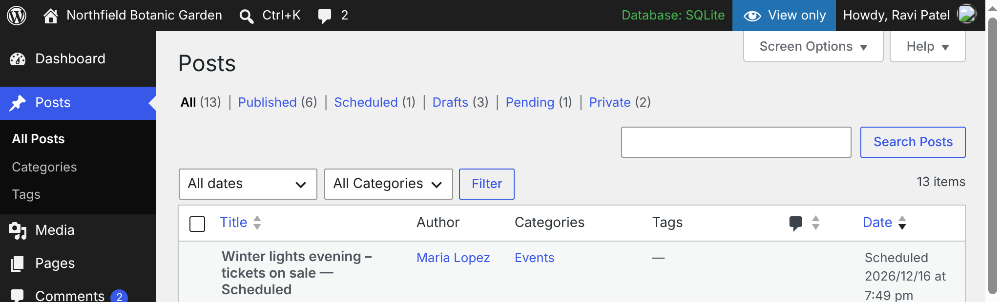
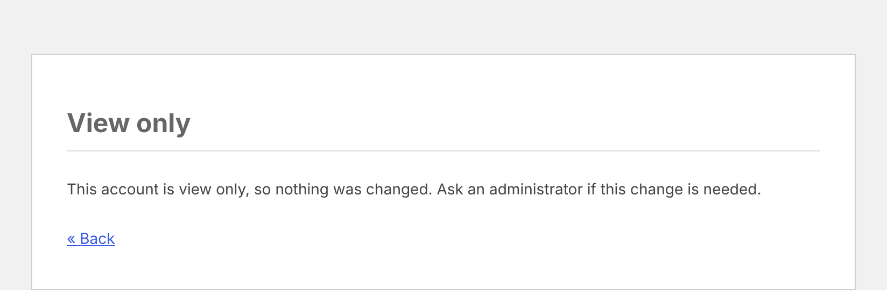
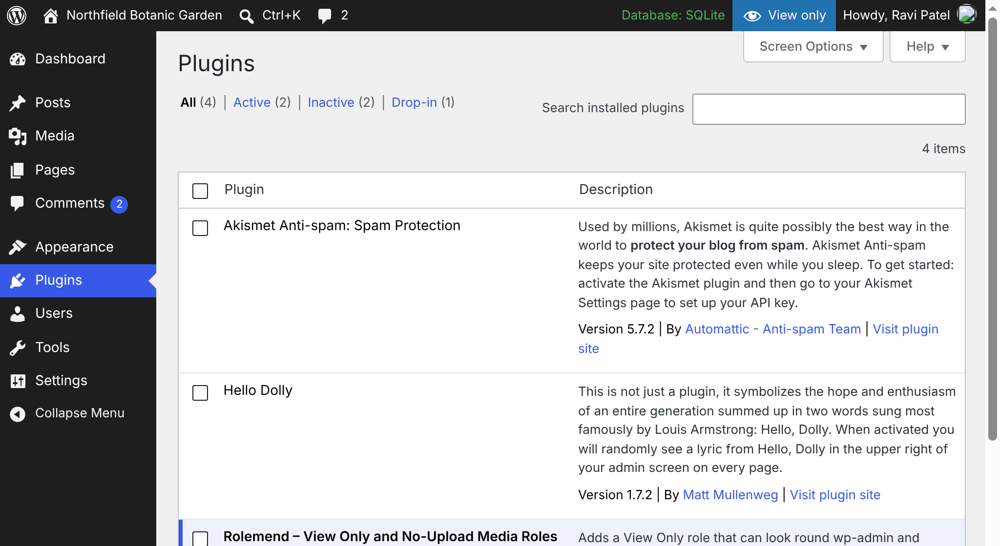
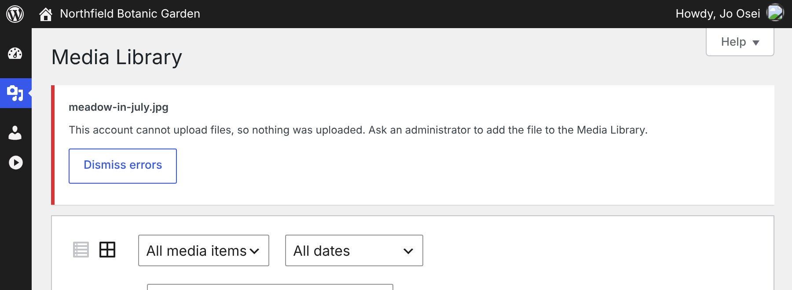
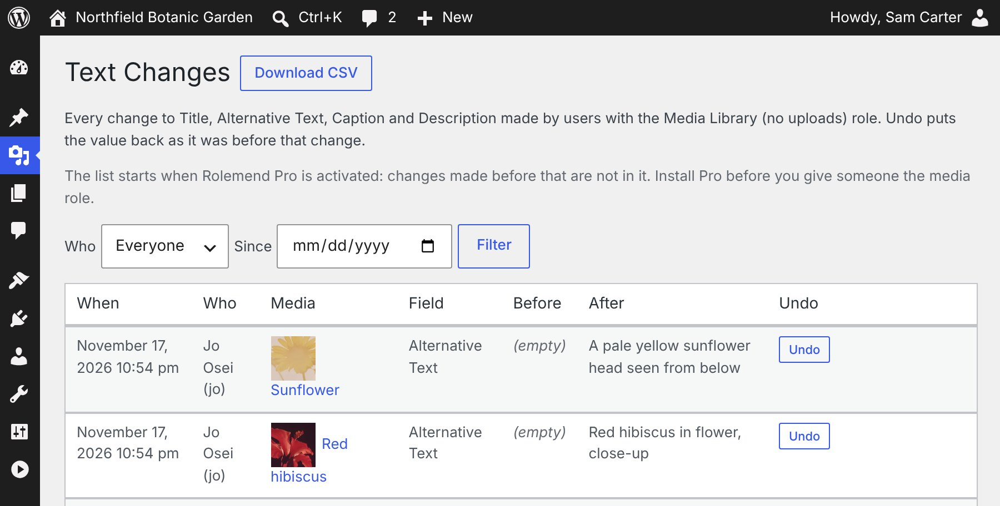

Rolemend for WordPress
Need someone to view your WordPress back end but not edit it, or an SEO person to fix alt text but not upload files?

- View but not edit: drafts, Settings, Plugins, Users; every save refused.
- Fix alt text, no uploads: on any photo in the Media Library.
- Changes nothing else on your site; delete it and the roles go.
Free: rolemend.zip 1.1.0, both roles · Pro, $19 once: Buy for $19
Tested on WordPress 7.1.4 and 6.5.14, PHP 8.3 and 7.4, on Linux; Windows and macOS untested · GPL source included · support@ochrestack.com
Above: a View Only user's Posts list (full screen: drafts and private posts listed, no edit links). Rolemend adds both roles and changes nothing else. Pro adds end dates and an undo list for media text (see it); neither role needs Pro. Single site and multisite tested (full list); the free zip is 37 KB.

View Only
Sees every WordPress screen an Administrator sees. Can change their own password, nothing else.



Media Library (no uploads)
Saves Title, Alternative Text, Caption and Description. Uploading, deleting and Edit Image are refused.


Images already placed in posts keep the alt text they were inserted with; featured images and galleries show the new text.
Rolemend Pro
- Access ends on: on that date the person loses the role and is signed out.
- Media > Text Changes: every change the media role made, before and after, with Undo and CSV.

$19 once, unlimited sites, updates included · needs the free plugin · Polar checkout · 14-day refund
What it does not lock
- Anything another plugin does outside the WordPress database when a plain link is clicked or a screen is read, such as sending an email or writing a file. WordPress's own links, such as Trash or Activate, are refused, and database writes from other plugins' code on these users' requests are stopped. A plugin whose save was stopped may still show its own "Saved" message. Give the role to people you trust not to tamper.
- Code that runs before WordPress knows who is signed in, and plugins that write through their own database connection instead of WordPress's.
- What the account can read is readable, including user email addresses and commenter details.
- Drafts are listed by title, author and date, but their text cannot be opened, because WordPress shows a draft only to people who may edit it.
- Tools > Export and the theme and plugin file editors are not available to the role.
- Other plugins' screens appear only when they use WordPress's own Settings permission, and some of them may load empty when their reading also goes through a save handler. WooCommerce stays hidden.
- On other plugins' screens, a link or form whose handler checks WordPress's security token is refused for both roles, even when it only reads (for example a download link).
- The media role cannot post comments or other front-end forms while signed in.
How we tested
| Test | Result |
|---|---|
| View Only user opens wp-admin screens | 54 screens, each complete, with "View only" in the toolbar |
| View Only user tries to change something: Settings, posts, pages and drafts, media, comments, users, plugins, themes, menus, widgets, Customizer, REST API, another plugin's own save handlers | 142 attempts, none got through: 141 refused with the plain message, 1 background request's plugin data dropped. A checksum of the site's content, settings and user tables was identical after every one |
| Media role uploads by every route we know (library, drag and drop, REST API, a file fetched from a URL, another plugin's upload handler) | 11 routes refused, and again after a role editor gave the role upload rights (22 refusals); no new file, no new attachment |
| Media role saves Title, Alternative Text, Caption and Description | Saved through Attachment details and Edit Media, read back |
| Activation | Every existing role and user identical; home page, a post, a page, an archive and a search byte-identical before and after |
| Deactivate, reactivate, delete | Both roles' users lose wp-admin, then get the same access back; on deletion the roles go and the users keep their accounts with no role |
Tested on Linux with WordPress 7.1.4 and 6.5.14, PHP 8.3.6 and 7.4.33, MariaDB 10.11.14, single site and multisite (subdirectory network), on PHP's built-in web server; both zips also installed through Upload Plugin on each WordPress and PHP pair with WP_DEBUG on and no notices. Plugin Check 2.2.0: 0 errors, 0 warnings. Requires WordPress 6.5 or later and PHP 7.4 or later. Not tested: MySQL 8, Apache or nginx, servers on Windows or macOS, translations; the full test suite has not been run on the SQLite Database Integration plugin.
How the images were made
They are captures of a real WordPress 7.1.4 with Rolemend 1.1.0 (and Rolemend Pro 1.0.1 for the Pro image), in Chromium 141, of our demo site Northfield Botanic Garden: 13 posts, 6 pages, 5 comments, 7 people and 20 photographs that ship with the Twenty Twenty-Five theme. The site runs on PHP's built-in server with the SQLite Database Integration plugin 3.1.3, which is why the toolbar says "Database: SQLite". On that site we checked, while capturing, that the Site Title was unchanged after the refused save, that nothing in the content, settings or user tables changed during the View Only session, that the alt text was stored, and that no file or attachment was added after the refused drop. The dropped photo was handed to WordPress's uploader by a script in the page, because the virtual display cannot drag from a file manager.
Details
- Quick start: install, give a role, Pro, updates.
- Privacy: neither plugin contacts any server. A View Only user can read what an administrator reads, including user emails.
- GPL-2.0-or-later, full source in both zips. Support: support@ochrestack.com.